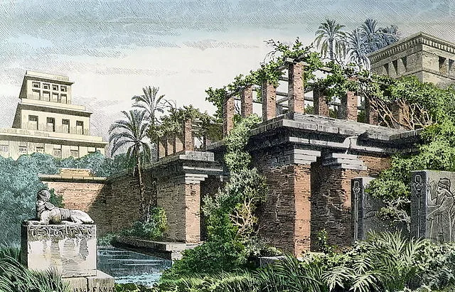

Assyrian Garden Design
Assyrian kings would set aside the land surrounding the palace to create a 'Assyrian Royal Landscape' with gardens, groves of trees, and animal preserves. The sites would be lined with walls and palms
The Hanging Gardens of Babylon
A fabled garden of the 605-562 BCE of the Neo-Babylonian Empire. Also known as the Gardens of Semiramis, the irrigation system pinpoints the significance of the advancements of technology during this period. It was described to have high stone terrraces to imitate mountains, each planted with large trees, and vegetation that draped over the edges.
Persian Translation of "Walled Garden" is Paradise
Ancient Assyrian Garden Design
Ancient Assyrian Garden Design
Ancient Assyrian garden design developed within one of the great civilizations of ancient Mesopotamia, where the creation of a lush cultivated landscape was a remarkable achievement in a predominantly dry environment. From approximately the **9th to 7th centuries BCE**, Assyrian kings developed extensive landscapes around their palaces that combined **formal gardens, orchards, groves, water systems, and animal parks**. These royal landscapes were not simply places of recreation. They were carefully controlled environments that communicated the **power, wealth, military success, and authority of the king**. By bringing trees, flowers, water, and animals into the palace environment, the ruler demonstrated his ability to command both nature and the resources required to sustain it. The garden was therefore an extension of the royal palace—a cultivated representation of the king's dominion over the natural world.
The Assyrian Royal Landscape
The landscape surrounding an Assyrian palace could encompass considerably more than a small ornamental garden. Royal estates incorporated different forms of cultivated land, including **orchards, groves, gardens, vineyards, hunting parks, and enclosed animal preserves**. The palace itself became the architectural center of a larger designed landscape. Walls were particularly important. They defined the boundaries of the royal estate, protected valuable plants, controlled animals, and separated the cultivated landscape from the surrounding countryside. Within these enclosed spaces, trees could be planted in deliberate arrangements along pathways, around watercourses, and within garden courts. The overall effect was an ordered royal oasis.
Trees as Symbols of Royal Hierarchy
Trees were among the most important elements of Assyrian gardens. In the arid Mesopotamian climate, mature trees represented considerable investment. They required water, labor, protection, and years of cultivation. A royal collection of mature trees could therefore serve as a visible demonstration of the king's resources. **Date palms** were particularly prominent. Their tall, architectural forms created strong vertical accents within the landscape and were ideally suited to the hot climate. Other trees were collected and cultivated as part of royal horticulture. Assyrian kings are known from historical records and palace reliefs to have taken an interest in plants and trees acquired from territories incorporated into their empires. This practice transformed the royal garden into a kind of **living collection of imperial abundance**.
The Imperial Garden
The Assyrian Empire extended across a vast geographical area, encompassing regions with different climates and plant communities. The royal garden could consequently become a place where plants from distant lands were gathered and cultivated. This gives the Assyrian garden an important connection with imperialism and botanical collection. The movement of plants into royal gardens demonstrated that the king's influence extended beyond the immediate landscape surrounding the palace. Trees and other valuable plants could be transported over considerable distances and established within the royal domain. The garden therefore became a physical representation of the empire itself: distant lands → conquered territories → collected plants → royal garden.
>Water and Irrigation
Water was fundamental to the success of the Assyrian garden. The natural environment of northern Mesopotamia could support agriculture, but successful royal landscapes still required sophisticated management of water. Channels, canals, reservoirs, and irrigation systems allowed water to be distributed throughout cultivated areas. The Assyrians developed impressive hydraulic infrastructure, including long-distance canals that supplied water to important settlements and royal centers. Within the garden, water could serve both **practical and ornamental purposes**. It supported trees and crops while also contributing to the cooling and visual experience of the landscape. A shaded garden beside flowing or collected water provided a dramatic contrast to the surrounding dry environment.Palace Gardens and Garden Rooms
Assyrian gardens could be integrated directly into the architecture of the palace. Courtyards provided enclosed areas for trees and planting, while larger garden spaces could extend beyond the immediate palace structures. Pathways connected different areas, allowing the king and his guests to move through a sequence of carefully controlled environments. The relationship between **palace, courtyard, garden, and larger royal estate** was therefore central to Assyrian landscape design. Garden walls and architectural boundaries also created a sense of privacy and exclusivity. The royal garden was a landscape that belonged to the king.
The Royal Hunt
One of the most distinctive characteristics of Assyrian royal landscapes was the connection between gardens and **hunting parks**. Assyrian palace reliefs frequently depict kings hunting lions and other animals. The royal hunt was not merely recreation; it was an important representation of royal authority and the king's ability to confront and control dangerous forces. The garden and hunting park therefore occupied an interesting position between **cultivated nature and controlled wilderness**. The king could enter a managed landscape containing animals, vegetation, water, and trees, and demonstrate his dominance over the natural world. This is one reason Assyrian palace reliefs frequently combine imagery of **gardens, trees, animals, water, and royal activity**.
The Garden in Assyrian Art
Assyrian palace reliefs provide some of the most important visual evidence for understanding ancient Mesopotamian landscapes. One particularly famous relief associated with **Ashurbanipal** depicts the king and queen relaxing in a garden following a royal lion hunt. The scene includes trees and vegetation surrounding the royal figures while the remains of the hunt appear within the composition. The garden is presented as a place of royal pleasure and triumph. It demonstrates an important Assyrian principle: **the cultivated garden was a stage upon which royal power could be displayed**.
Formality and Repetition
Assyrian gardens appear to have favored deliberate organization rather than an entirely naturalistic arrangement. Rows of trees could create avenues and boundaries, while repeated forms established visual rhythm. Palms and other trees could be arranged to emphasize architectural structures and important pathways. The use of repetition produced a sense of **order, control, and permanence**. This approach would later find parallels throughout the gardens of the broader ancient Near East, where formal planting, water management, enclosure, and royal display remained recurring themes.
The Hanging Gardens of Babylon
The Hanging Gardens of Babylon occupy a unique place in the history of ancient garden design. Traditionally associated with the reign of **Nebuchadnezzar II**, who ruled the Neo-Babylonian Empire from approximately **605–562 BCE**, the gardens were described in later classical sources as one of the great wonders of the ancient world. They are sometimes called the **Gardens of Semiramis**, reflecting their later association with the legendary Assyrian queen Semiramis. There is an important historical qualification: **archaeologists have not conclusively identified the Hanging Gardens at Babylon**, and no surviving Babylonian inscription has definitively confirmed their existence there. Ancient Greek and Roman writers, however, described an extraordinary elevated garden associated with Babylon. Consequently, the Hanging Gardens occupy an unusual position between **historical tradition, ancient literature, archaeology, and legend**.
The Terraced Garden
According to the classical descriptions, the gardens consisted of a series of **high terraces or elevated platforms** constructed to create an artificial mountain-like landscape. The terraces were reportedly planted with:
* Large trees
* Flowering plants
* Shrubs
* Vines
* Other luxuriant vegetation
Plants were said to cascade downward over the edges of the terraces, producing the appearance of vegetation growing on the sides of a mountain.
This would have been particularly spectacular in Babylon's relatively flat landscape.
Instead of accepting the natural topography of the region, the garden would have manufactured its own mountain.
Engineering and Irrigation
The most remarkable aspect of the traditional account is the technology required to sustain vegetation at considerable height. Large trees require substantial quantities of water, and transporting that water to elevated planting terraces would have been a significant engineering challenge. Ancient accounts describe systems for raising and distributing water. Although the precise technology remains uncertain, the concept demonstrates the fundamental relationship between **garden design and hydraulic engineering** in Mesopotamia. The garden's beauty depended upon invisible infrastructure. Beneath the vegetation would have been an elaborate system of structural supports, soil, drainage, and water distribution. The achievement, whether exactly as described or embellished by later writers, reflects the ancient Near Eastern understanding that **water management was essential to creating extraordinary gardens**.
The Mountain in the Garden
The artificial terraces may have had a symbolic dimension as well as an engineering function. Babylon was situated within the relatively flat Mesopotamian plain. A terraced garden rising above the city could therefore create a dramatic artificial landscape. The elevated garden could evoke the image of a **mountain covered in vegetation**, bringing a distant natural environment into the urban royal landscape. This concept fits a broader ancient Near Eastern fascination with gardens as cultivated paradises—places where water and vegetation could be concentrated and protected from the surrounding aridity.
The Garden as Royal Display
Like the Assyrian royal garden, the Hanging Gardens were traditionally understood as a demonstration of royal wealth and power. Creating an elevated garden filled with mature vegetation would have required:
* Architecture
* Engineering
* Irrigation
* Soil transportation
* Skilled horticulture
* Continuous maintenance
* A large labor force
The garden consequently represented far more than decoration. It demonstrated the ability of the ruler to transform architecture into landscape. The palace garden became a technological achievement as well as a work of art.
Babylonian Garden Tradition
The Hanging Gardens should also be understood within the larger tradition of Mesopotamian garden design. The ancient Near East had a long history of enclosed gardens, orchards, sacred landscapes, irrigation systems, and royal parks. The garden represented a controlled environment in which the harshness of the surrounding landscape could be replaced with **shade, water, fruit, flowers, and greenery**. Whether the Hanging Gardens existed exactly as described by classical authors, their story expresses this fundamental cultural ideal remarkably well.
Key Principles of Ancient Assyrian Garden Design
1. Royal Enclosure
Gardens were incorporated into protected palace estates and enclosed landscapes.
2. Groves and Orchards
Trees provided shade, food, beauty, and a visible demonstration of wealth.
3. Date Palms
Palms created strong vertical structure and were particularly suited to the Mesopotamian environment.
4. Irrigation
Canals and controlled water systems made extensive cultivation possible.
5. Garden and Palace Integration
Landscape and architecture were designed as parts of a single royal environment.
6. Animal Preserves
Hunting parks incorporated controlled wildlife into the royal landscape.
7. Imperial Collections
Plants from distant regions could become part of royal horticultural collections.
8. Formal Organization
Rows of trees, pathways, walls, and water created an ordered landscape.
9. Symbolism of Hierarchy
The garden demonstrated the ruler's ability to control resources and nature.
10. Cultivated Oasis
The garden provided a lush sanctuary in contrast to the surrounding dry landscape.
Key Principles of the Hanging Gardens Tradition
1. Terracing
Create elevated levels to transform a flat landscape into an artificial mountain.2. Vertical Gardening
Use multiple planting levels to create height and layers of vegetation.
3. Water Engineering
Integrate irrigation into the architecture of the garden.
4. Large Trees
Use mature trees to create shade and reinforce the illusion of a mountain landscape.
>5. Cascading Vegetation
Allow vines and plants to spill over terrace walls.
6. Architectural Landscape
Treat the building itself as part of the garden.
7. Royal Spectacle
Use extraordinary engineering and horticulture to create a landscape that communicates wealth and power.8. Paradise in the City
Create an enclosed, elevated oasis of greenery within an otherwise arid urban environment.
Legacy of Assyrian and Mesopotamian Garden Design
Ancient Assyrian and Babylonian gardens established a powerful garden tradition based upon the **relationship between water, architecture, vegetation, enclosure, and authority**. The Assyrian royal landscape emphasized the king's control over an expansive natural world—gardens, orchards, trees, and animals brought together within the royal domain. The legendary Hanging Gardens took the concept even further, transforming architecture itself into a planted landscape of terraces, trees, and flowing vegetation. Together, these traditions present the ancient Near Eastern garden as much more than a decorative space. It was an **engineered oasis, a place of pleasure, a botanical collection, a royal retreat, and a visual expression of power**. The enduring image is that of a garden created deliberately against its surroundings: **walls protecting the landscape, palms rising above shaded paths, water moving through carefully engineered channels, fruit trees providing abundance, and vegetation transforming architecture into a living paradise.**